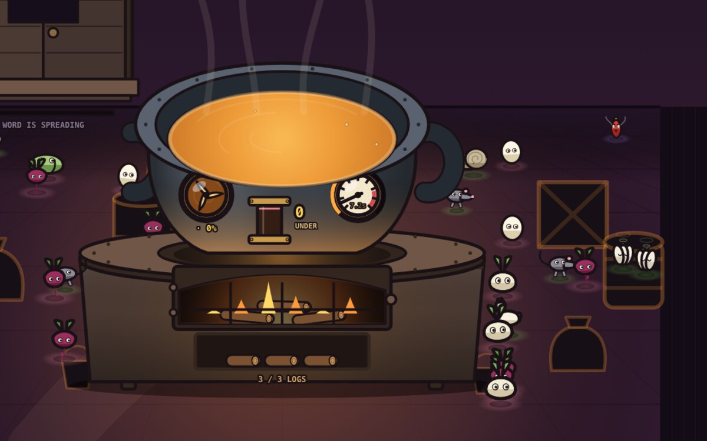

The Great Soup01 Idle · Finite incremental Playable
The Great Soup
A pot that has simmered since before there was a floor to stand on.
You are the newest hand in the kitchen. Nobody will tell you what is in the pot, and nobody remembers lighting the fire. Your duties are three: keep it fed, keep it moving, keep it hot. Stir the broth, throw things in, and feed whoever sits down at the hatch — then find out how far a soup can go.
- Play timeA long evening
- Does it end?Yes — on purpose